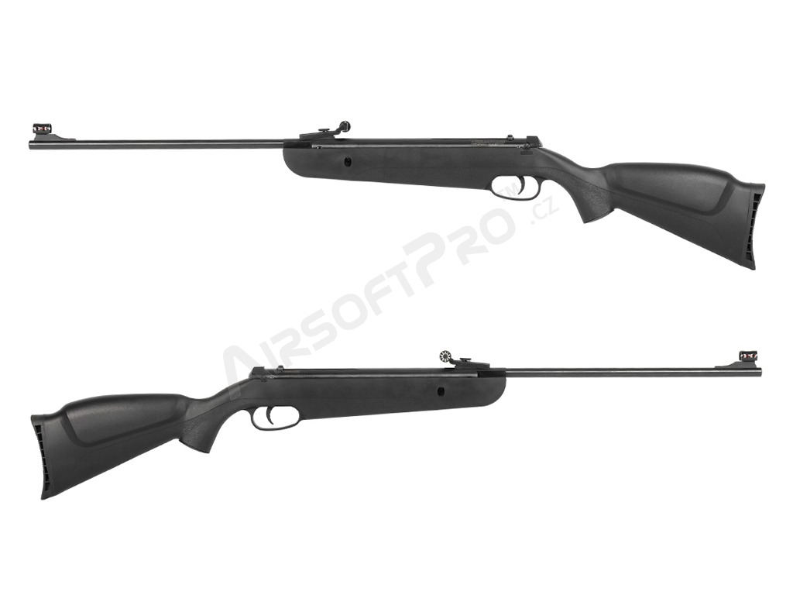

Pružinové vzduchovky (tzv. springer nebo break-barrel) jsou nejstarším a nejrozšířenějším typem vzduchových zbraní. Princip je jednoduchý: přelomením nebo natažením závěru se stlačí pružina, jejíž uvolnění pohybuje pístem a vytváří tlak vzduchu pro výstřel.
Break-barrel (přelamovací)
Nejběžnější typ pružinové vzduchovky. Hlaveň se přeloží, čímž se natáhne pružina a vloží se náboj. Jednoduchá údržba, žádná potřeba externího zdroje energie. Výkon: 100–300 m/s v závislosti na modelu. Vhodné pro trénink, sport i lov drobné zvěře.
Underlever a sidelever
Alternativní systémy natažení pružiny – pomocí páky pod nebo po straně zbraně. Umožňují pevnou hlaveň (fixed barrel), což zlepšuje přesnost oproti break-barrel systému. Oblíbené u závodních střelců.

Pružinová vzduchovka s přelamovací hlavní
CO2 zbraně
CO2 vzduchovky používají jako pohon plynové patrony s oxidem uhličitým (CO2), nejčastěji standardní 12 g patrony (Powerlet). Jsou oblíbené pro svou kompaktnost a realistický vzhled – hodí se pro repliky pistolí i karabin.
Výhody CO2 systému
Opakovaná střelba bez manuálního natahování, relativně konstantní výkon, široká dostupnost náhradních patron. Mnoho CO2 pistolí má blowback efekt pro realistický pocit ze střelby.
Nevýhody a omezení
Výkon klesá s teplotou a prázdnějícím se zásobníkem. Patrony jsou jednorázové a generují odpad. Při intenzivní střelbě dochází k ochlazení zbraně. Cena provozu je vyšší než u PCP nebo pružinových systémů.
PCP – Pre-Charged Pneumatic
PCP (předplněné pneumatické) systémy patří k nejmodernějším a nejvýkonnějším vzduchovkám. Zásobník vzduchu (nádrž) je plněn stlačeným vzduchem na vysoký tlak (150–300 barů) pomocí speciálního plnicího zařízení nebo potápěčského kompresoru.
Technické parametry PCP
PCP vzduchovky dosahují výkonu 200–350 m/s a jsou schopny opakované přesné střelby bez výrazného poklesu výkonu mezi výstřely. Jsou ideální pro soutěžní střelbu, lovecké účely a Field Target soutěže.
Typy regulátorů
Moderní PCP systémy jsou vybaveny regulátorem tlaku, který zajišťuje konstantní pracovní tlak nezávisle na stavu nádrže. To výrazně zlepšuje konzistenci výkonu a přesnost. Regulovaný PCP je vrcholem vzduchové technologie.
Srovnání pohonných systémů
Přibližné rozsahy výkonu podle typu pohonného systému
Kalibry a jejich použití
Vzduchové zbraně se vyrábí v několika standardních kalibrech. Výběr kalibru závisí na účelu použití:
4,5 mm (.177) – nejběžnější, vhodný pro sport, trénink i rekreaci. Plochá trajektorie, vysoká rychlost.
5,5 mm (.22) – větší průměr, těžší projektil, více energie. Oblíbený pro lov drobné zvěře.
6,35 mm (.25) – specializovaný kaliber pro výkonné PCP pušky a lov.
9 mm (.35) – velký kaliber pro lovecké PCP systémy, maximální zastavovací účinek.
Legislativa v České republice
Vzduchové zbraně jsou v ČR regulovány zákonem č. 119/2002 Sb. o střelných zbraních a střelivu. Jejich kategorizace závisí na kinetické energii střely.
„Zbraní kategorie D jsou vzduchové zbraně, jejichž projektil má úsťovou energii nepřesahující 16 J, a plynové zbraně, jejichž projektil má úsťovou energii nepřesahující 16 J."
Zákon č. 119/2002 Sb. o zbraních, § 7 odst. 1 písm. f)
Vzduchové zbraně s úsťovou energií do 16 J (kategorie D) nevyžadují zbrojní průkaz. Nákup a vlastnictví je povolen osobám starším 18 let. Přesto platí povinnost bezpečného skladování a zákaz nošení na veřejnosti v připravené poloze.